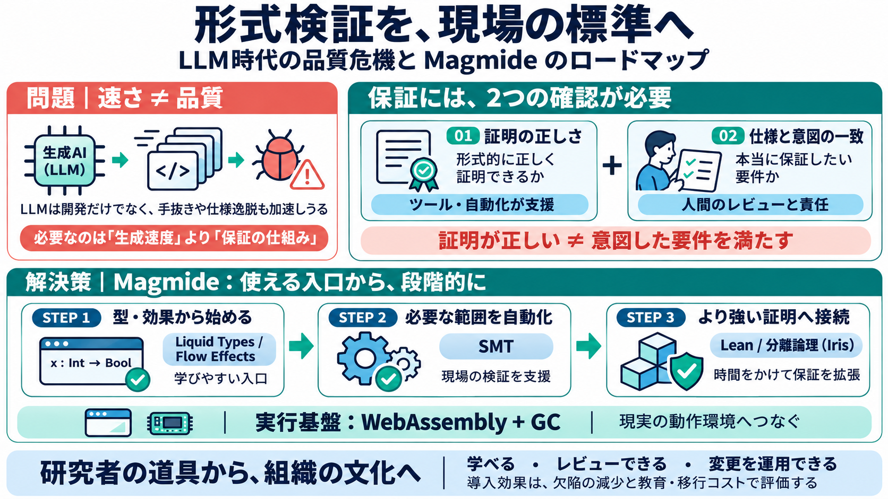

Leveraging LLMs for Formal Software Requirements: Challenges and Prospects
techniques used in formal methods improve trust, and support compliance with industry standards and regulations. However…

LLM時代の品質危機
LLM（生成AI）が開発を加速する一方で、品質低下を“速度で増幅”するリスクがある。だから必要なのは、形式検証を研究の道具で終わらせず、現場の標準（文化／基盤）へ押し上げることだ。
加速する“悪習”
従来からソフトウェア工学は、雑で不十分な実践がデフォルトになりがちだった。LLMがそれを“LLMスピード”で増やすと、品質低下がさらに加速しうる。
保証は契約
形式検証の価値は「数学的に正しい証明」だけでは終わらない。証明が成立しても、仕様が意図を正しく捉えていなければ“保証したいもの”は外れる。
主流化の要件
主流化の鍵は、証明支援ツールの“理論の強さ”だけでなく、理解可能性・レビュー可能性・運用可能性にある。人間が責任を持ち、仕様の妥当性を確認できる導線が必要だ。
自動生成の限界
LLMが証明文を作れるとしても、その定理文が意図した要件を表しているかは別問題だ。著者は「単なる願望」を否定し、人間の納得（review / assurance）を要求する。
Magmideの設計思想
最初から最強の理論体系（トップダウン）を要求せず、使える入口から始めて時間とともに接続していく。Magmideはそのロードマップを提示している。
WebAssemblyが橋
現場に近い実行基盤として、WebAssembly（GC付き）をターゲットに据える。ブラウザから組込みまで、幅広い環境で形式検証したいという動機がある。
研究ではなく工学へ
安全な未来は特定の形式手法研究者だけでは提供できない。ソフトウェアエンジニア全体の規範として変える必要がある。
主張の核（3点）
本文の論点を短くまとめると、次の3つに収束する。
評価できる形に
形式検証を“主流”にするなら、改善が観測される品質指標とコストの見合いが必要だ。本文は方向性は強いが、定量データや具体的な導入体験の詳細は薄い。
賭け先を変える
確率的な“宝くじ”に賭けるのではなく、人間側が文化と基盤を変えるべきだ。LLMは道具であり、責任は設計と運用を行う側に残る。
参考（検索・文脈）
以下は本稿要約で触れた論点（LLM×形式化・仕様の曖昧さ・人間の検証責任・完全自動化の難しさ）に対応する代表的な文脈。
techniques used in formal methods improve trust, and support compliance with industry standards and regulations. However…
THE GAP · 4 Cooperation, not replacement: the fast and the sound Language models • Fast, fluent, general • Guess what hu…
Second, the specification habit matters more than the verification tool. Even if you never run a formal verifier, writin…
These tools check the generated specifications, while symbolic reasoning provides constraint-based feedback that helps r…
Abstract: Large language models (LLMs) have demonstrated remarkable code generation capabilities, but the correct-ness o…